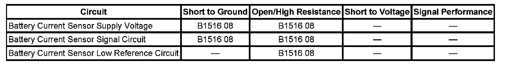

B1516
DTC B1516
DTC DESCRIPTORS
DTC B1516 08
Battery Current Sensor Signal Invalid
DTC B1516 66
Battery Current Sensor Wrong Mounting Position
DIAGNOSTIC FAULT INFORMATION

Perform the Diagnostic System Check - Vehicle prior to using this diagnostic procedure. Initial Inspection and Diagnostic Overview
CIRCUIT/SYSTEM DESCRIPTION
The battery current sensor is a 3-wire hall effect current sensor. The battery current sensor monitors the battery current. It directly inputs to the body control module (BCM). It creates a 5-Volt pulse width modulation (PWM) signal of 128 Hz with a duty cycle of 0-100 percent. Normal duty cycle is between 5-95 percent. Between 0-5 percent and 95-100 percent are for diagnostic purposes.
CONDITIONS FOR RUNNING THE DTC
- The ignition is ON.
- The engine is running.
CONDITIONS FOR SETTING THE DTC
B1516 08
The BCM detects a duty cycle of the PWM input signal is less than 3 percent or more than 97 percent for more than 60 seconds.
B1516 66
The BCM detects the battery current sensor is improperly installed.
ACTION TAKEN WHEN THE DTC SETS
There is no battery telltale illuminated or driver information center (DIC) message displayed.
CONDITIONS FOR CLEARING THE DTC
The DTC clears as current status when the battery sensed current returns to normal range for more than 5 seconds.
CIRCUIT/SYSTEM TESTING
B1516 08
1. Ignition OFF, disconnect the harness connector at the battery current sensor.
2. Ignition OFF, test for less than 1 ohm of resistance between the low reference circuit terminal B and ground.
- If greater than the specified range, test the low reference circuit for an open/high. If the circuit tests normal, replace the BCM.
3. Ignition ON, test for 5 volts between the battery current sensor supply voltage circuit terminal A and ground.
- If less than the specified range, test the battery current sensor supply voltage circuit for a short to ground or an open/high resistance. If the circuit tests normal, replace the BCM.
4. Test for 5 volts between the battery current sensor signal circuit and ground.
- If less than 5 volts, test the battery current sensor signal circuit terminal C for a short to ground or an open/high resistance. If the circuit tests normal, replace the BCM.
5. If all circuits test normal, test or replace the battery current sensor.
B1516 66
Verify that the battery current sensor is installed securely and positioned in the correct current flow direction.
- If the battery current sensor is not, remove and reinstall the sensor properly.
REPAIR INSTRUCTIONS
Perform the Diagnostic Repair Verification after completing the diagnostic procedure.
- Control Module References for BCM replacement, setup, and programming Programming and Relearning
- Battery Current Sensor Replacement Verification Tests